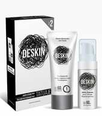
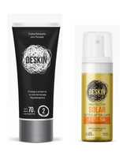

Cuidados del tatuaje

Primeras 48 horas
- Sacar el film
- Limpiar con agua y el Jabón Espuma Deskin
- Secar sin friccionar
- Poner una delgada capa del Bálsamo Restaurador Post Tatuaje Deskin
- Volver a cubrir con un nuevo film
REALIZARLO 3 A 4 VECES POR DÍA
Comprar en Deskin

A partir de las 48 horas
- Continuar con la limpieza e hidratación 3 veces por día DURANTE LOS SIGUIENTES 10 A 15 DÍAS.
Recomendamos usar la Crema Hidratante para Tatuajes Deskin
- Proteger del sol con el spray Protector Solar FPS54 Deskin
- Proteger de productos con alcohol que puedan irritar
Comprar en Deskin